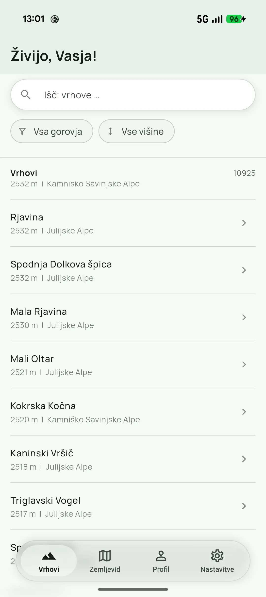
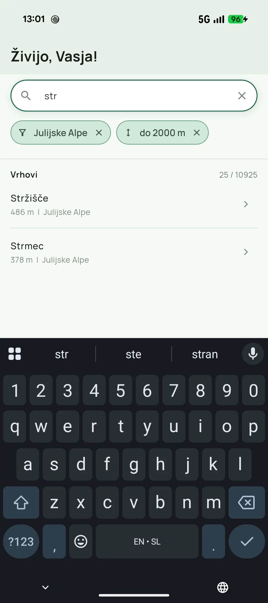
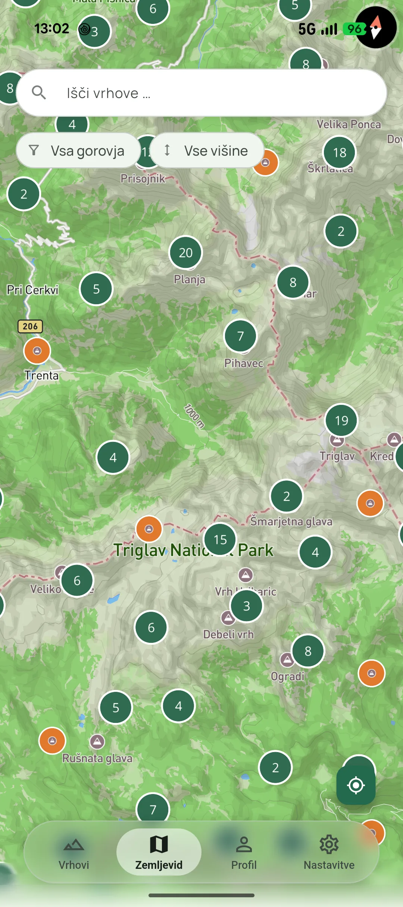
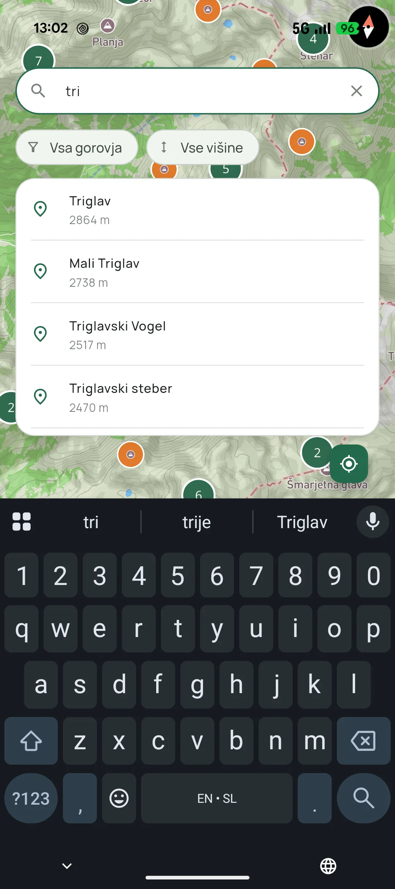
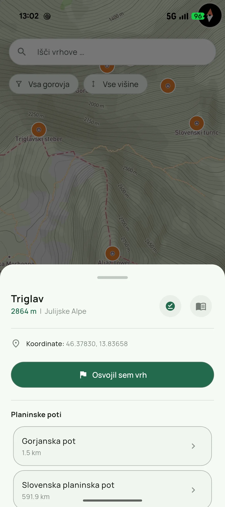
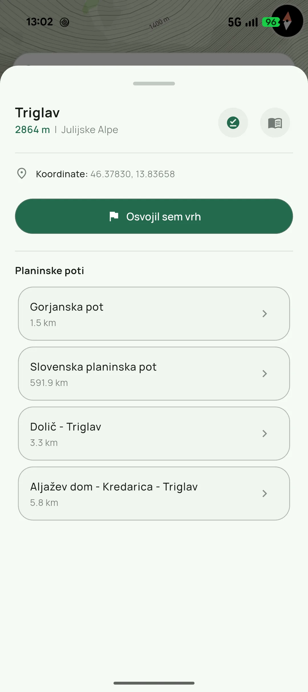
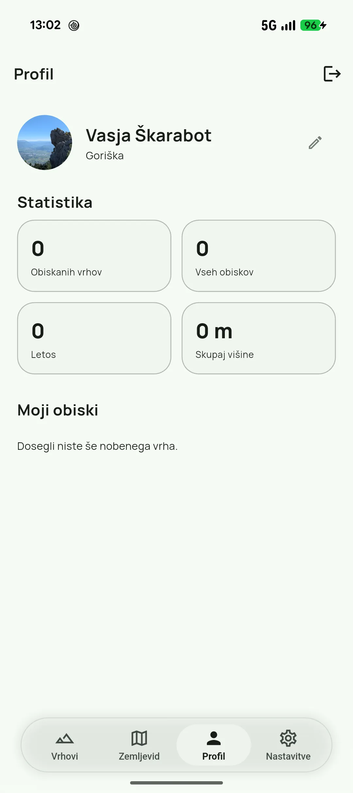
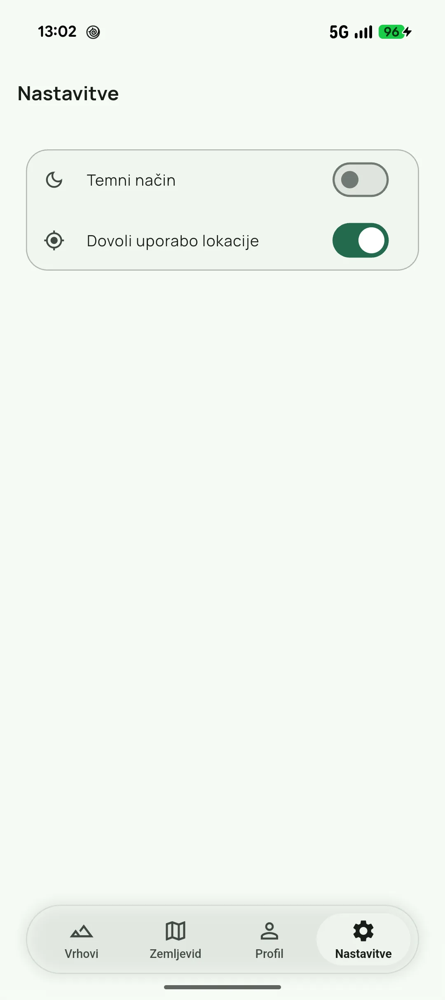
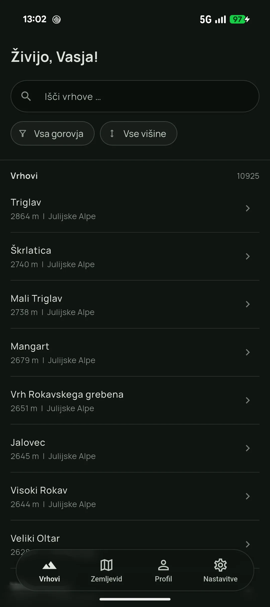

Mobile app
uHribe
explore the peaks around you and mark your visits
01 About
uHribe is a hiking companion for Slovenian mountains. It brings over 10,000 peaks into one place: browse them in a list or on a topographic map, see which routes lead to the top, and mark the summits you've reached to build up your own hiking stats.
02 Stack
- Core
- FlutterSupabase
- Maps platform
- Mapbox
- Data
- Acquired from web
03 Features
- Exploring 10,000+ peaks in Slovenia, filtered by mountain range and altitude
- Topographic map with clustered peaks and quick search
- Hiking routes leading to each peak
- Marking your summit visits
- Profile with personal hiking stats
- Light and dark mode
- Offline mode
App gallery
Swipe or click to enlarge








